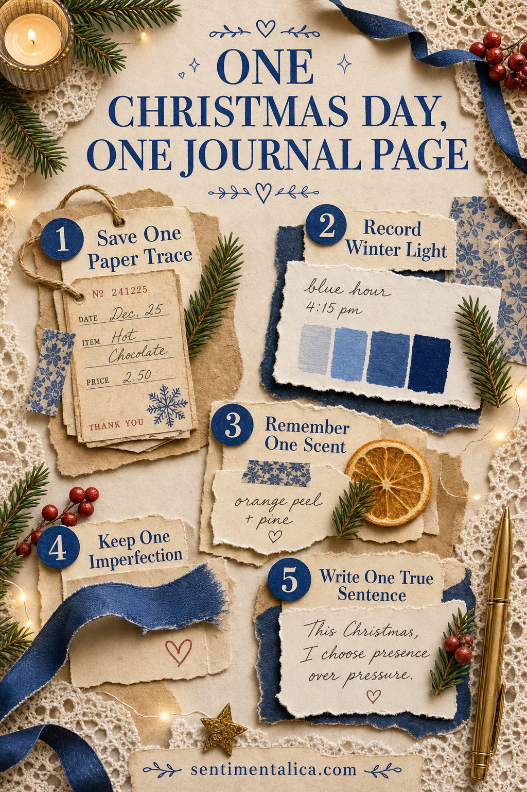

A Christmas journal does not need to record the entire season. One ordinary day at home can hold enough: the list beside the kettle, winter light on the table, a ribbon cut too short, and the moment the room finally became quiet.
Choose a day with no pressure to make it memorable. Keep one envelope nearby and collect only the small paper traces that naturally pass through your hands.

Save the first paper trace
Keep a grocery-list corner, tea label, gift-tag offcut, bakery bag, postage stamp, or ribbon wrapper. Choose one piece with a useful word, texture, or color rather than saving everything.
Write the date on the back immediately. December scraps can look similar once several days collect in the same envelope.
Record the winter light
Notice where the light falls at one particular time: pale morning across the sink, blue afternoon at the window, or warm lamps before dinner. Photograph it or paint a narrow color strip.
Use that light as the page’s main neutral. Christmas does not have to mean bright red and green; cream, twilight blue, pine, and one berry accent may feel closer to the real day.
Add one familiar scent
Write what gave the room its December feeling: orange peel, fir branches, cinnamon, baking, cold wool, or candle wax. Do not add scented oils to paper you want to preserve. A written line or ingredient label can hold the memory safely.
Keep one unfinished detail
The ribbon that did not fit, card still waiting to be written, or cookies that browned too much can belong on the page. Imperfection keeps the spread from becoming a catalogue of decorations.
Tuck the evidence into a pocket or write it beneath a flap. The hidden layer makes the page feel intimate rather than staged.
Finish with one true sentence
Write the detail a photograph cannot show: “The house was quiet for twelve minutes,” “We ate the broken cookies first,” or “The tree lights reflected in the dark window.”
- One dated paper trace
- One color taken from the winter light
- One safe scent memory
- One imperfect or unfinished detail
- One sentence only you could write
A Christmas memory feels precious because it was lived, not because every detail matched.
Build the spread the following morning while the small details are still close. Place the strongest paper first, leave one calm area, and let the sentence be the final layer.
Find more seasonal memory-keeping ideas in the Sentimentalica journal.